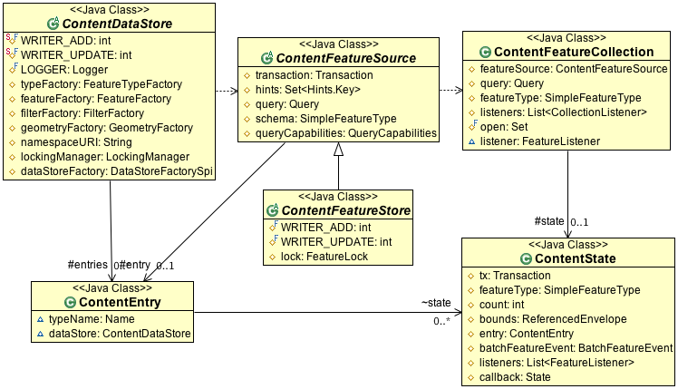

Internals¶
The internals of gt-data provide assistance to those writing new format support for the DataStore API with a wealth of abstract classes to extend, and utility classes performing common functions.
ContentDataStore¶
ContentDataStore represents a ground up rewrite of “much loved” AbstractDataStore. Since the form of that love was reflect in lots of workarounds, and extra methods, and complicated class interactions this is generally viewed as a good thing.
It offers a clear design with a small number of classes to implement. These classes are referenced by ContentDataStore as it goes about doing its job, as a result you are not responsible for many of the usual DataStore classes.
There is a tutorial showing how to read a simple comma separated value file:
- ContentDataStore Tutorial (tutorial)
Central to this design is the ContentEntry and ContentState classes. These classes are provided to you as you are implementing for general note keeping. You can override the instance of ContentState that is created if you need to track additional details cache information specific to your implementation.
ContentEntry stores all the notes needed for a featureSource to function.
getName()
getTypeName()
These two methods identify a published FeatureType
getState( Transaction )
Access to the ContentState for ongoing Transactions. Two FeatureStores using the same Transaction will end up using the same ContentState.
dispose()
getDataStore()
ContentState maintains all the information for an on going Transaction.
- getEntry()
- getTransaction()
- setTransaction(Transaction)
You can cache your generated schema and summary values here:
- getFeatureType()
- setFeatureType(SimpleFeatureType)
- getCount()
- setCount(int)
- getBounds()
- setBounds(ReferencedEnvelope)
Listener information is gathered here where your FeatureStore can delegate to it. You can call these methods as modifications are made to your data.
- addListener(FeatureListener)
- removeListener(FeatureListener)
- getBatchFeatureEvent()
- hasListener()
- fireFeatureUpdated(FeatureSource<?, ?>, Feature, ReferencedEnvelope)
- fireFeatureAdded(FeatureSource<?, ?>, Feature)
- fireFeatureRemoved(FeatureSource<?, ?>, Feature)
- fireFeatureEvent(FeatureEvent)
- fireBatchFeatureEvent(boolean)
Care and feeding:
- flush()
- close()
- copy() - used when copying the Transaction.AUTO_COMMIT ContentState at the start of a Transaction
DirectoryDataStore¶
DirectoryDataStore is used to allow file based datastores (such as shapefile) to smoothly represent a directory of files in one fell swoop.
Here is an example for “csv” files:
/** Extend a CSVDataStoreFactory for a Directory of files */
public class CSVDirectoryFactory extends CSVDataStoreFactory {
/** The directory to be scanned for file data stores */
public static final Param URLP = new Param("url", URL.class,
"Directory containing geospatial files", true);
public String getDisplayName() {
return "Directory of spatial files (csv)";
}
public String getDescription() {
return "Takes a directory of csv and exposes it as a data store";
}
public boolean canProcess(Map params) {
// we don't try to steal single csv away from the main factory
if (super.canProcess(params)) {
try {
URL url = (URL) URLP.lookUp(params);
File f = DataUtilities.urlToFile(url);
return f != null && f.exists() && f.isDirectory();
} catch (Exception e) {
return false;
}
} else {
return false;
}
}
public DataStore createNewDataStore(Map params) throws IOException {
URL url = (URL) URLP.lookUp(params);
File dir = DataUtilities.urlToFile(url);
if(dir != null && dir.isDirectory()) {
return new DirectoryDataStore(DataUtilities.urlToFile(url), new CSVDataStoreFactory(this, params));
} else {
throw new DataSourceException("Not a directory "+dir );
}
}
}